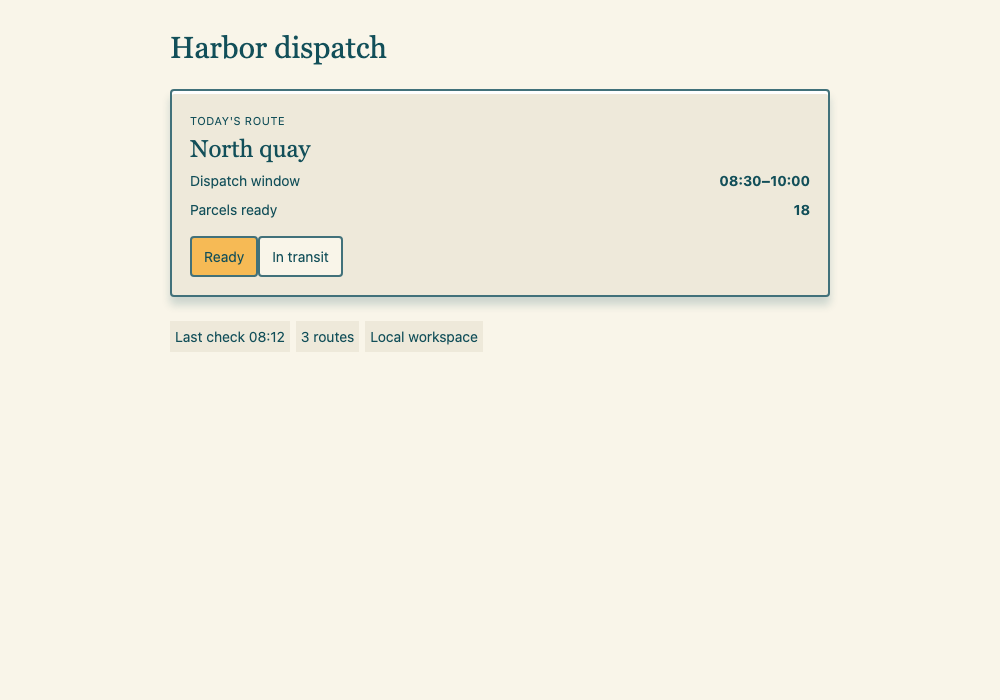
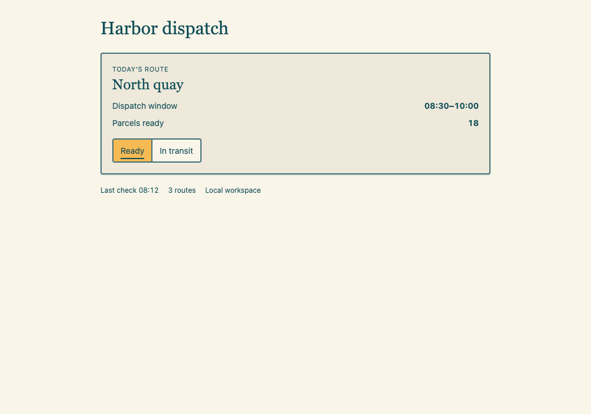
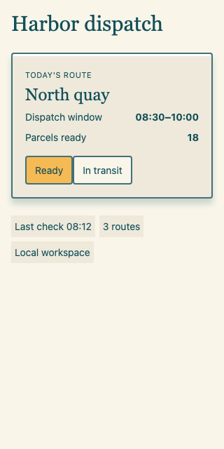
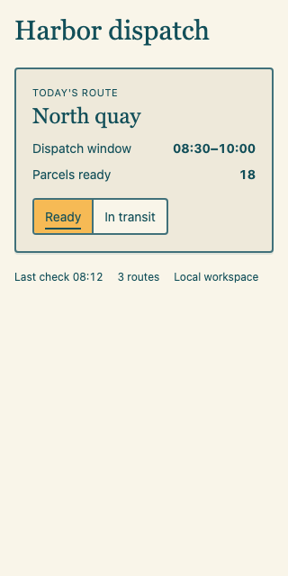
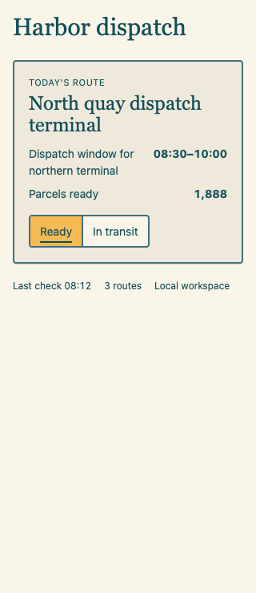
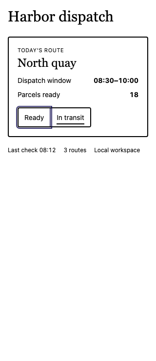
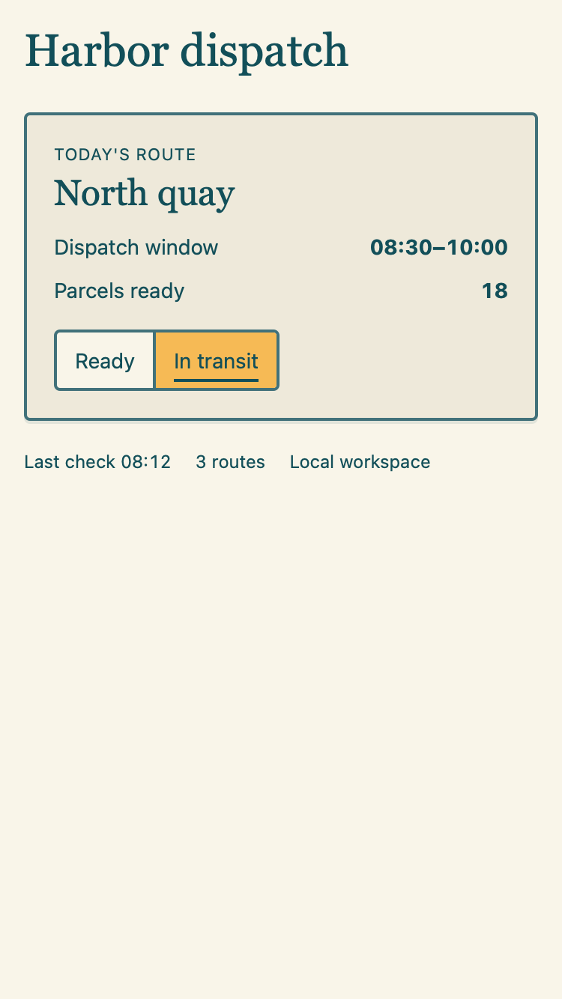

Harbor dispatch — visual evidence
Matched viewport captures. Images display at native CSS size when space permits; use each image directly to inspect its original pixels.
Before · 1000 × 700 · DPR 1
After · 1000 × 700 · DPR 1 · Chromium
Before · 320 × 640 · DPR 1
After · 320 × 640 · DPR 1
Longer content · 320 px · WebKit
Forced colors · Chromium
After · 375 × 667 · DPR 2 · WebKit